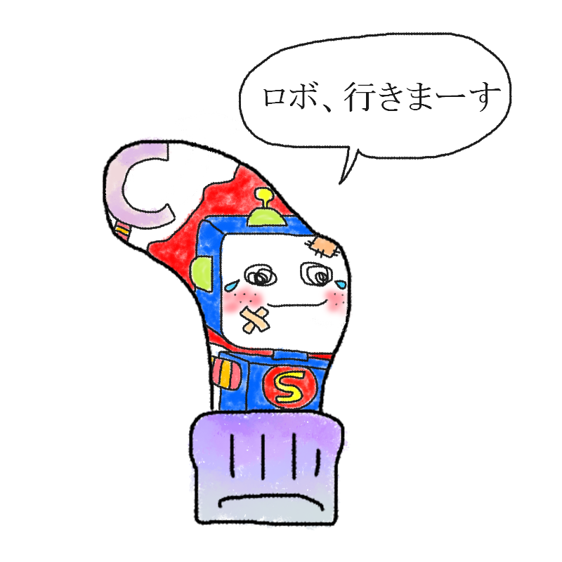

あなたの診断結果
？ ？ ？ （キャラクター名前募集中）足裏の小指球にあく人
【足裏界の平和を守る自称正義のロボット！
みんなを守りたいが錆びついた体がそれを阻む
哀愁のポンコツヒーロー型】

「今行きます、徒歩ですが……！ 待ってろ、足裏界の平和はオレが守る！」
正義の心はマッハなのに、体中がサビていてギシギシ進む哀愁の鉄屑ロボ！
あなたは、「誰よりも熱い正義感と『世界を救いたい』というピュアな心を持ちながらも、現実はポンコツすぎて空回りしがちなお騒がせ愛されロボットタイプ」です。
足裏の小指側という絶妙な位置から、日々足裏界全体のバランスを見守り、「オレがみんなを守らねばならない！」と勝手に使命感を燃やしている熱血系。
しかし、長い年月と摩擦によって体中がすっかり錆びついており、いざ出動しようにも「ギー……ガガガ…」としか動きません。
「今すぐ現場に駆けつける！」と意気込んだものの、移動手段がまさかの「徒歩（しかも超スロー）」なため、現場に到着するころには事件がとうに解決しているのがお約束。
焦るあまり足裏に負荷がかかりすぎて、自分のほうが真っ先に穴が空いてしまいます。
不器用でポンコツだけど、そのまっすぐすぎるハートに誰もがクスッと笑いつつ応援したくなってしまう、最高の愛されマシーンです。
あなたの特徴
- 足裏界の平和を本気で守ろうとしているが、誰も頼んでいない自称ヒーロー気質
- 正義感は超音速なのに、実際のボディが錆びついていて絶望的に足が遅い
- ピンチの駆けつけ台詞は「今行きます、徒歩ですが……！」
- オーバーヒートと摩擦の限界により、小指球のあたりからポッカリとネジや穴が漏れ出る構造
最後にひとつ。
たとえ体が錆びついていようとも、君が誰かを守りたいと思ったその心に一日の長はない。
今こそその錆びた膝を叩き直せ！ 歩みは遅くとも、君はまぎれもなく
足裏界の希望の星だ！
このキャラクターに名前をつける
思いついた名前を教えてね！
※このスタンプには日陰に消えたボツキャラが混ざっています
※この診断はただのお遊びです。
※靴下の穴が開く場所には個人差があります。